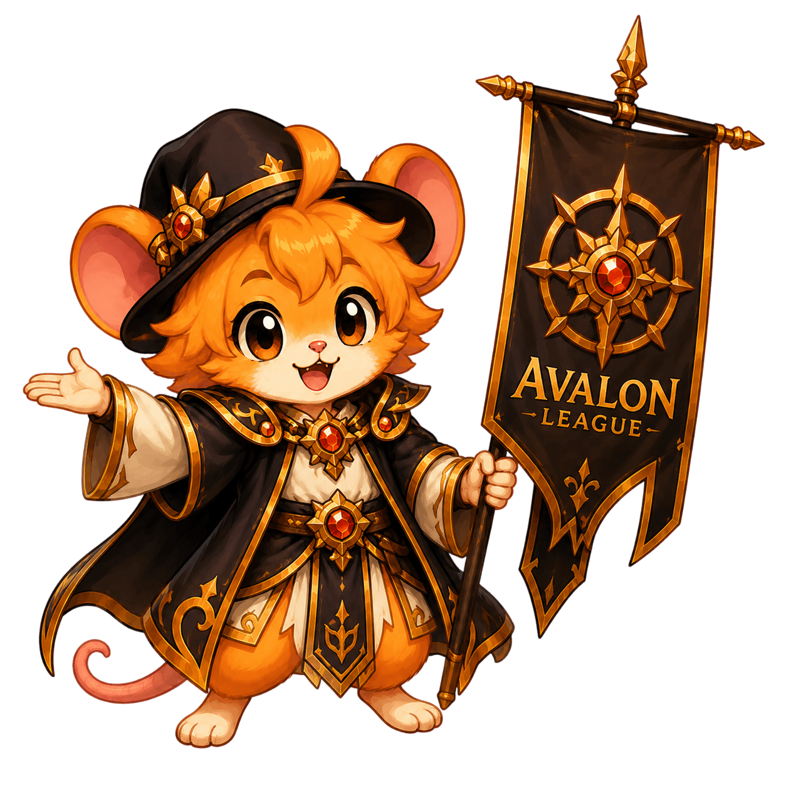
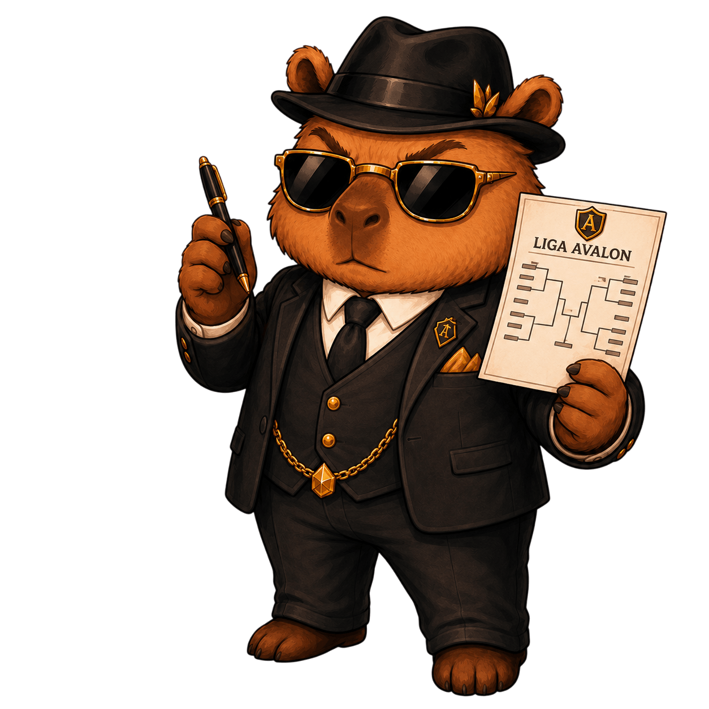

Liga Avalon
Torneios dos Guardiões
Crie disputas internas, adicione convidados especiais, sorteie participantes, defina mapas por fase e registre os campeões da guilda.

Etapa 1
Participantes confirmados
Busque membros da Avalon pelo nick ou adicione convidados especiais. A lista grande foi substituída por uma busca compacta para deixar a Liga mais leve.
Etapa 2
Resumo da Liga
Defina o modo, organize equipes quando necessário e gere a estrutura da competição.
Definição do modo da Liga
Modo selecionado
Nenhum modo escolhido
Escolha um modo para preparar as regras da disputa.
Sorteio
Ordem sorteada
A ordem sorteada alimenta a montagem das chaves e deixa a seleção mais transparente.
Resultado final
Pódio dos Campeões
Quando a final for concluída, os troféus da Liga aparecem aqui.